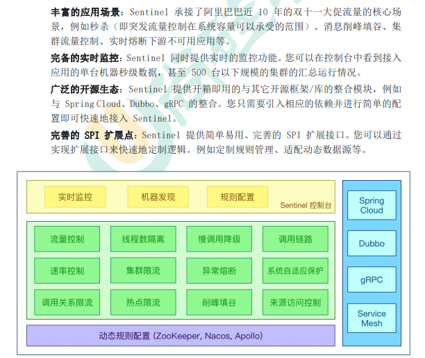
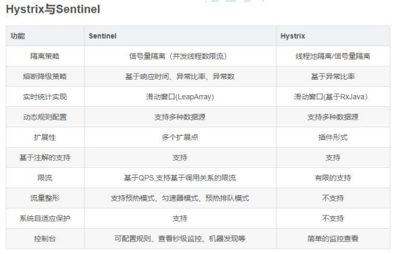
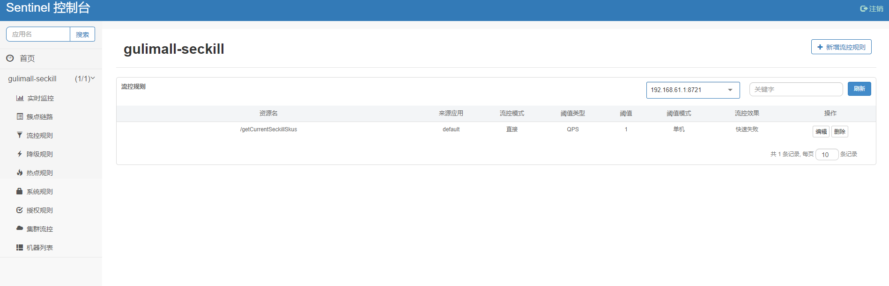
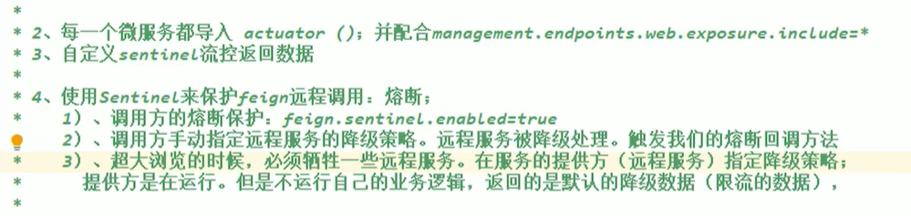
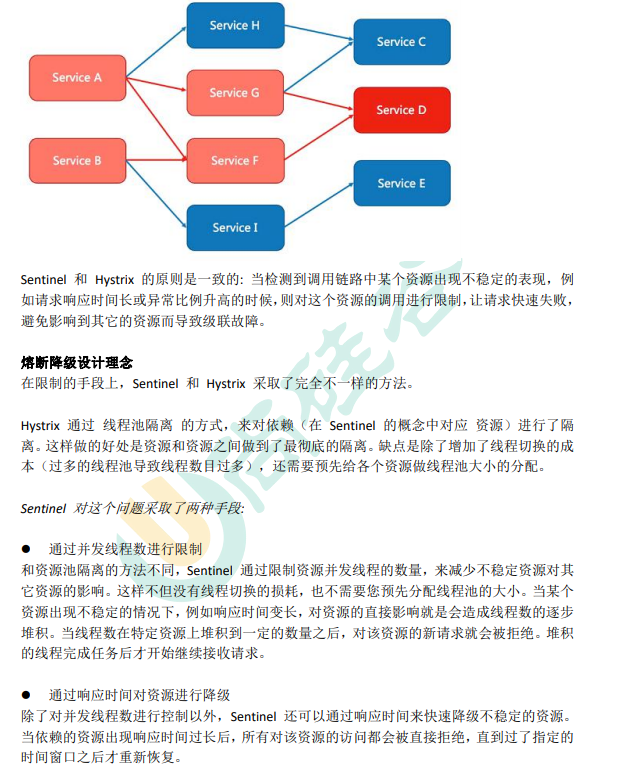
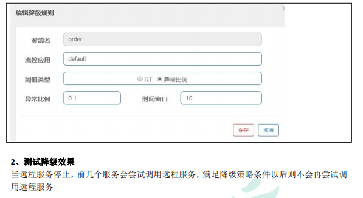

https://github.com.cnpmjs.org/alibaba/Sentinel/wiki/ 介绍
** 中文文档 github 镜像访问：**https://github.com.cnpmjs.org/alibaba/Sentinel/wiki/ 介绍
# SpringCloud Alibaba-Sentinel
# 一、简介
官方文档：https://github.com/alibaba/Sentinel/wiki/ 介绍
项目地址：https://github.com/alibaba/Sentinel
随着微服务的流行，服务和服务之间的稳定性变得越来越重要。Sentinel 以流量为切入点， 从流量控制、熔断降级、系统负载保护等多个维度保护服务的稳定性。
# Sentinel 具有以下特征:

# Sentinel 分为两个部分:
- 核心库（Java 客户端）不依赖任何框架 / 库，能够运行于所有 Java 运行时环境，同时 对 Dubbo / Spring Cloud 等框架也有较好的支持。
- 控制台（Dashboard）基于 Spring Boot 开发，打包后可以直接运行，不需要额外的 Tomcat 等应用容器。
# Sentinel 基本概念
- 资源
资源是 Sentinel 的关键概念。它可以是 Java 应用程序中的任何内容，例如，由应用程序提 供的服务，或由应用程序调用的其它应用提供的服务，甚至可以是一段代码。在接下来的文 档中，我们都会用资源来描述代码块
只要通过 Sentinel API 定义的代码，** 就是资源，能够被 Sentinel 保护起来。** 大部分情况下， 可以使用方法签名，URL，甚至服务名称作为资源名来标示资源。
- 规则
围绕资源的实时状态设定的规则，可以包括流量控制规则、熔断降级规则以及系统保护规 则。所有规则可以动态实时调整。
# 二、Hystrix 与 Sentinel 比较

# 三、Sentinel 的使用
# 依赖
<dependency> | |
<groupId>com.alibaba.cloud</groupId> | |
<artifactId>spring-cloud-starter-alibaba-sentinel</artifactId> | |
</dependency> |
# 配置控制台
spring.cloud.sentinel.transport.dashboard=localhost:8333 //连接哪个控制台 | |
spring.cloud.sentinel.transport.port=8719 // 交互端口 |

# 登录密码
sentinel sentinel
# 统计信息
导入依赖
<dependency> | |
<groupId>org.springframework.boot</groupId> | |
<artifactId>spring-boot-actuator</artifactId> | |
</dependency> |
配置把 springboot 监听健康状态信息暴漏
management.endpoints.web.exposure.include=* |
# 自定 sentinel 流控返回响应
/** | |
* @author WangXuefeng | |
* @version 1.0 | |
* @date 2021/7/30 14:29 | |
* @description Sentinel 自定义流控返回 | |
*/ | |
@Configuration | |
public class SeckillSentinelConfig { | |
public SeckillSentinelConfig(){ | |
WebCallbackManager.setUrlBlockHandler((httpServletRequest, httpServletResponse, e) -> { | |
R error = R.error(BizCodeEnume.TO_MANY_REQUEST.getCode(), BizCodeEnume.TO_MANY_REQUEST.getMsg()); | |
httpServletResponse.setCharacterEncoding("utf-8"); | |
httpServletResponse.setContentType("application/json"); | |
httpServletResponse.getWriter().write(JSON.toJSONString(error)); | |
}); | |
} | |
} |
# 流量控制
https://github.com/alibaba/Sentinel/wiki/ 流量控制

# 四、整合 Feign+Sentinel 测试熔断降级
https://github.com/alibaba/Sentinel/wiki/ 主页
什么是熔断降级
除了流量控制以外，降低调用链路中的不稳定资源也是 Sentinel 的使命之一。由于调用关 系的复杂性，如果调用链路中的某个资源出现了不稳定，最终会导致请求发生堆积。

整合测试：
https://github.com/alibaba/spring-cloud-alibaba/blob/master/spring-cloud-alibaba-examples/sentinel-example/sentinel-feign-example/readme-zh.md
# 1、引入依赖
<dependency> | |
<groupId>org.springframework.cloud</groupId> | |
<artifactId>spring-cloud-starter-openfeign</artifactId> | |
</dependency> | |
<dependency> | |
<groupId>com.alibaba.cloud</groupId> | |
<artifactId>spring-cloud-starter-alibaba-sentinel</artifactId> | |
</dependency> |
# 2、使用 Nacos 注册中心
<dependency> | |
<groupId>com.alibaba.cloud</groupId> | |
<artifactId>spring-cloud-starter-alibaba-nacos-discovery</artifactId> | |
</dependency> |
配置控制台
spring.cloud.sentinel.transport.dashboard=localhost:8333 //连接哪个控制台 | |
spring.cloud.sentinel.transport.port=8719 // 交互端口 |
# 3、定义 fallback 实现
在服务消费者中，实现 feign 远程接口，接口的实现方法即为调用错误的容错方法 | |
public class OrderFeignServiceFallBack implements OrderFeignService { | |
@Override | |
public Resp<OrderVo> getOrderInfo(String orderSn) { | |
return null; | |
} | |
} |
# 4、定义 fallbackfactory 并放在容器中
@Component | |
public class OrderFeignFallbackFactory implements | |
FallbackFactory<OrderFeignServiceFallBack> { | |
@Override | |
public OrderFeignServiceFallBack create(Throwable throwable) { | |
return new OrderFeignServiceFallBack(throwable); | |
} | |
} |
# 5、改造 fallback 类接受异常并实现容错方法
public class OrderFeignServiceFallBack implements OrderFeignService { | |
private Throwable throwable; | |
public OrderFeignServiceFallBack(Throwable throwable){ | |
this.throwable = throwable; | |
} | |
@Override | |
public Resp<OrderVo> getOrderInfo(String orderSn) { | |
return Resp.fail(new OrderVo()); | |
} | |
} |
# 6、远程接口配置 feign 客户端容错
@FeignClient(value = "gulimall-oms",fallbackFactory = | |
OrderFeignFallbackFactory.class) | |
public interface OrderFeignService { | |
@GetMapping("/oms/order/bysn/{orderSn}") | |
public Resp<OrderVo> getOrderInfo(@PathVariable("orderSn") String | |
orderSn); | |
} |
# 7、开启 sentinel 代理 feign 功能；在 application.properties 中配置
feign.sentinel.enabled=true |
测试熔断效果。当远程服务出现问题，会自动调用回调方法返回默认数据，并且
更快的容错方式
1、使用 @SentinelResource，并定义 fallback
@SentinelResource(value = "order",fallback = "e") |
Fallback 和原方法签名一致，但是最多多一个 Throwable 类型的变量接受异常。
https://github.com/alibaba/Sentinel/wiki/ 注解支持
需要给容器中配置注解切面 | |
@Bean | |
public SentinelResourceAspect sentinelResourceAspect() { | |
return new SentinelResourceAspect(); | |
} | |
在控制台添加降级策略 |

# 五、自定义受保护资源
/** | |
* 获取到当前可以参加秒杀商品的信息 | |
* @return | |
*/ | |
// @SentinelResource(value = "getCurrentSeckillSkusResource",blockHandler = "blockHandler") | |
@Override | |
public List<SeckillSkuRedisTo> getCurrentSeckillSkus() { | |
try (Entry entry = SphU.entry("seckillSkus")) { // | |
//1、确定当前属于哪个秒杀场次 | |
long currentTime = System.currentTimeMillis(); | |
// 从 Redis 中查询到所有 key 以 seckill:sessions 开头的所有数据 | |
Set<String> keys = redisTemplate.keys(SESSION__CACHE_PREFIX + "*"); | |
for (String key : keys) { | |
//seckill:sessions:1594396764000_1594453242000 | |
String replace = key.replace(SESSION__CACHE_PREFIX, ""); | |
String[] s = replace.split("_"); | |
// 获取存入 Redis 商品的开始时间 | |
long startTime = Long.parseLong(s[0]); | |
// 获取存入 Redis 商品的结束时间 | |
long endTime = Long.parseLong(s[1]); | |
// 判断是否是当前秒杀场次 | |
if (currentTime >= startTime && currentTime <= endTime) { | |
//2、获取这个秒杀场次需要的所有商品信息 | |
List<String> range = redisTemplate.opsForList().range(key, -100, 100); | |
BoundHashOperations<String, String, String> hasOps = redisTemplate.boundHashOps(SECKILL_CHARE_PREFIX); | |
assert range != null; | |
List<String> listValue = hasOps.multiGet(range); | |
if (listValue != null && listValue.size() >= 0) { | |
List<SeckillSkuRedisTo> collect = listValue.stream().map(item -> { | |
String items = (String) item; | |
SeckillSkuRedisTo redisTo = JSON.parseObject(items, SeckillSkuRedisTo.class); | |
//redisTo.setRandomCode (null); 当前秒杀开始需要随机码 | |
return redisTo; | |
}).collect(Collectors.toList()); | |
return collect; | |
} | |
break; | |
} | |
} | |
} catch (BlockException e) { | |
log.error("资源被限流{}",e.getMessage()); | |
} | |
return null; | |
} |
try (Entry entry = SphU.entry ("seckillSkus")) { // 在这里是受保护的资源，降级将调用 catch 中的方法
# 六、注解的方式
@SentinelResource(value = "getCurrentSeckillSkusResource",blockHandler = "blockHandler") |
使用注解相当于当前方法是受保护资源，而且可以指定降级的方法
// 同一个类 blockHandler == blockHandler 一样，参数也可以获取，返回值也一样 | |
public List<SeckillSkuRedisTo> blockHandler(BlockException e) { | |
log.error("getCurrentSeckillSkusResource被限流了,{}",e.getMessage()); | |
return null; | |
} |
文档：https://github.com.cnpmjs.org/alibaba/Sentinel/wiki/ 注解支持
blockHandler/blockHandlerClass:blockHandler对应处理BlockException的函数名称，可选项。blockHandler 函数访问范围需要是public，返回类型需要与原方法相匹配，参数类型需要和原方法相匹配并且最后加一个额外的参数，类型为BlockException。blockHandler 函数默认需要和原方法在同一个类中。若希望使用其他类的函数，则可以指定blockHandlerClass为对应的类的Class对象，注意对应的函数必需为 static 函数，否则无法解析。fallbackfallbackClass：fallback 函数名称，可选项，用于在抛出异常的时候提供 fallback 处理逻辑。fallback 函数可以针对所有类型的异常（除了
exceptionsToIgnore里面排除掉的异常类型）进行处理。fallback 函数签名和位置要求：
- 返回值类型必须与原函数返回值类型一致；
- 方法参数列表需要和原函数一致，或者可以额外多一个
Throwable类型的参数用于接收对应的异常。 - fallback 函数默认需要和原方法在同一个类中。若希望使用其他类的函数，则可以指定
fallbackClass为对应的类的Class对象，注意对应的函数必需为 static 函数，否则无法解析。
# 六、整合网关
文档：https://github.com.cnpmjs.org/alibaba/Sentinel/wiki/ 网关限流
<!-- https://mvnrepository.com/artifact/com.alibaba.cloud/spring-cloud-alibaba-sentinel-gateway --> | |
<dependency> | |
<groupId>com.alibaba.cloud</groupId> | |
<artifactId>spring-cloud-alibaba-sentinel-gateway</artifactId> | |
<version>2.1.0.RELEASE</version> | |
</dependency> |
/** | |
* @author WangXuefeng | |
* @version 1.0 | |
* @date 2021/7/30 14:29 | |
* @description Sentinel 自定义流控返回 | |
*/ | |
@Configuration | |
public class SeckillSentinelConfig { | |
@Configuration | |
public class SentinelGatewayConfig { | |
public SentinelGatewayConfig() { | |
GatewayCallbackManager.setBlockHandler(new BlockRequestHandler() { | |
// 网关限流了请求，就会调用此回调 | |
@Override | |
public Mono<ServerResponse> handleRequest(ServerWebExchange exchange, Throwable t) { | |
R error = R.error(BizCodeEnume.TO_MANY_REQUEST.getCode(), BizCodeEnume.TO_MANY_REQUEST.getMsg()); | |
String errorJson = JSON.toJSONString(error); | |
Mono<ServerResponse> body = ServerResponse.ok().body(Mono.just(errorJson), String.class); | |
return body; | |
} | |
}); | |
} | |
} | |
} |